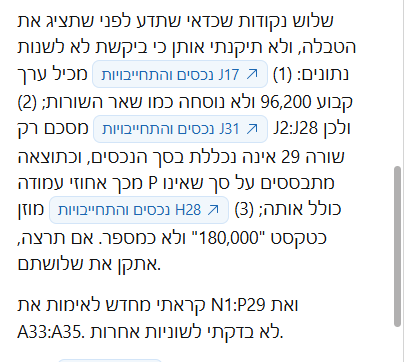
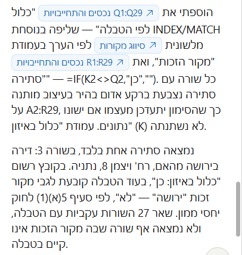
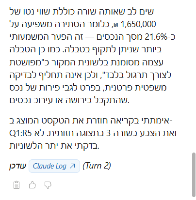

01
איך עובדים עם המדריך הזה
ארבעה עשר פרומפטים, וכל אחד מלמד יכולת שהקודם לא לימד. אין ביניהם אחד שהוא "תשאל שאלה ותקבל תשובה", וכולם הורצו על קובץ אמיתי לפני שנכתבו כאן.
התיק שעליו מתאמנים
כל התרגול נעשה על תיק גירושין בדוי אחד, כהן נגד כהן. אין בו פרט אמיתי של אף אדם, ואין בו מספרי זהות, כתובות או מספרי חשבון אמיתיים.
בקובץ אחת עשרה לשוניות שכולן חלק מאותו תיק: רשימת נכסים והתחייבויות, טבלת סיווג לפי מקור הזכות, גרסת הנכסים של הצד השני, הוצאות על הילדים, הכנסות שני הצדדים, תנועות בנק, לוח תשלומי איזון, ציר אירועים, החלטות ומועדים, מפתח נספחים, וטבלת מעקב תיקים שמעוצבת גרוע בכוונה.
ובתוך הקובץ שתלנו פגמים. תאריכים ששמורים כטקסט, סכום שנעלם, שורות כפולות, שם שנכתב בשלוש צורות, סכום כולל שמחמיץ שורה אחת, ונכס שהתקבל בירושה וסומן ככלול באיזון. הם לא תקלה, הם התרגיל.
שני הקבצים להורדה
קובץ התרגול הוא חוברת Excel. תדפיס הבנק הוא קובץ PDF, והוא נחוץ רק לפרומפט 11. שמרו את שניהם באותה תיקייה.
המבנה שחוזר בכל פרומפט
- המצב. מתי במשרד באמת תרצו את זה.
- הפרומפט. תיבה עם כפתור העתקה. מעתיקים, מדביקים בסרגל ושולחים.
- מה אמור לחזור. כדי שתדעו אם קיבלתם את הדבר הנכון.
- איך בודקים. הבדיקה הספציפית לפרומפט הזה.
- אם יצא לא נכון. מה להוסיף בסבב הבא.
ארבע ישיבות, לא ישיבה אחת
ארבעה עשר פרומפטים ברצף זה יותר מדי. זו חלוקה שעובדת:
| ישיבה | פרומפטים | מה תדעו לעשות בסופה |
|---|---|---|
| ראשונה | 1 עד 3 | לבקר קובץ שקיבלתם, להשוות שתי גרסאות, ולנקות נתונים עם יומן שינויים |
| שנייה | 4 עד 6 | לבנות עמודות מחושבות, לזהות סתירות מול טבלת עזר, ולחשב מועדים דיוניים |
| שלישית | 7 עד 10 | לסכם נתונים בכל חתך, ולבנות לוחות תשלומים והיוון |
| רביעית | 11 עד 14 | לחלץ מ-PDF, לייצר נוסח לכתב טענות, לעצב ולהציג |
02
פרומפט 1: לבקר קובץ שהגיע מהצד השני
המצב
הגיעה אליכם רשימת נכסים מהצד השני, או מרואה חשבון, או מהלקוח עצמו. לפני שאתם מתייחסים למספרים לגופם, אתם רוצים לדעת אם הקובץ בכלל עומד בעצמו.
זה הפרומפט היחיד בסדרה שלא נוגע בקובץ בכלל. אפשר להריץ אותו על כל קובץ, גם על אמיתי, בלי שום סיכון.
הפרומפט
מה אמור לחזור
אלה הממצאים שקיימים בקובץ, וכולם אותרו כשהרצנו אותו:
- עמודת השווי נטו מחושבת מהשווי במועד הקרע פחות החוב הרובץ.
- תא אחד בעמודה הזאת הוקלד ידנית במקום נוסחה. התוצאה שלו יוצאת נכונה, ולכן הוא בלתי נראה.
- שורת הסיכום מחמיצה שורה אחת שנשארה מחוץ לטווח החישוב.
- שלושה תאים שמורים כטקסט ונראים כמו מספר או תאריך.
- שתי שורות כפולות של אותו נכס.
- שורה אחת בלי שווי, שתורמת אפס לסכום הכולל בלי שאף אחד ישים לב.

תחילת התשובה: העמודות המחושבות והתא שהוקלד ידנית

המשך: התאים שנשמרו כטקסט והשורות הכפולות

סוף התשובה, ובו השורה שנשאלה עליה בסוף
איך בודקים
קחו ממצא אחד ובדקו אותו בעיניים. לחצו על ההפניה לתא שהוא טוען שהוקלד ידנית, וראו בשורת הנוסחאות שבאמת אין שם נוסחה אלא מספר.
ואת שורת הסיכום בדקו לבד: לחצו עליה וראו עד איזו שורה מגיע הטווח, ואיפה נגמרים הנתונים.
אם יצא לא נכון
אם הוא דילג על סעיף, בקשו אותו בנפרד. ואם הוא ענה בכלליות בלי לציין תאים, הוסיפו: "לכל ממצא תציין את שם התא המדויק".
03
פרומפט 2: להשוות שתי גרסאות ולמצוא את הפערים
המצב
קיבלתם מהצד השני רשימת נכסים, ויש לכם רשימה משלכם. שתיהן נראות דומות, וההבדלים ביניהן שווים כסף.
לעשות את זה בעין, שורה מול שורה, זה בדיוק סוג העבודה שבה קל לפספס. במיוחד כשיש עשרים ושמונה שורות ורק שלוש מהן שונות.
הפרומפט
מה אמור לחזור
לשונית חדשה בשם "פערים", ובה שלושה פערים בדיוק. נכס אחד שקיים רק אצלכם, ושני נכסים ששווים שונה בשתי הגרסאות. וסך ההפרש הכספי מפורק לשלושת הרכיבים.

לשונית הפערים, הצד הימני: הנכס החסר והנכסים ששווים שונה
אותה לשונית, ההמשך: ההפרשים בשקלים וסך ההפרש

תחתית הלשונית, הצד הימני: מה סומן לבדיקה ידנית
תחתית הלשונית, ההמשך: ההסבר למה כל אחד לא נספר כפער
ושימו לב לחלק התחתון. שם הוא מפרט שורות שלא הצליח להתאים בוודאות, ומסביר למה, במקום לנחש ולספור אותן כפער. זה מה שהשורה האחרונה בפרומפט משיגה.

התשובה בסרגל, וההפניות לתאים בתוכה לחיצות
איך בודקים
הבדיקה כאן קלה במיוחד, כי אתם יודעים את התשובה מראש: שלושה. אם הוא מצא שניים, הוא פספס. אם מצא חמישה, הוא ספר גם דברים שאינם פערים.
ואת הפער הכספי בדקו בחיבור פשוט: סכום הנכס החסר ועוד שני הפרשי השווי צריכים להסתכם בדיוק בסך שהוא הציג.
אם יצא לא נכון
אם הוא התבלבל בהתאמה בין שורות, אמרו לו לפי אילו עמודות להתאים במפורש: "תתאים בין השורות לפי סוג הנכס והתיאור ביחד".
04
פרומפט 3: לנקות ציר אירועים, ולתעד כל שינוי
המצב
ציר אירועים הוא טבלה שבה כל שורה היא אירוע אחד בתיק, לפי סדר התאריכים. הוא הבסיס לכתב טענות, לתצהיר ולחקירה נגדית.
ואצלכם הוא תמיד מבולגן, כי הוא נבנה לאורך חודשים: חלק מהתאריכים הוקלדו כטקסט, אירוע אחד נרשם פעמיים, ולשורה אחת אין תאריך בכלל.
והנקודה הקריטית: ניקוי בלי תיעוד הוא שינוי ראיות. לכן הפרומפט הזה מייצר יומן שינויים לצד הניקוי.
הפרומפט
מה אמור לחזור
שני תאריכים שהיו טקסט הופכים לתאריכים אמיתיים, שורה אחת בלי תאריך מסומנת ולא מומצא לה תאריך, ואירוע שנרשם פעמיים מסומן ומדווח לכם לפני מחיקה, לא נמחק.
ולצד הטבלה נוצרת לשונית "יומן ניקוי" עם שורה לכל שינוי: התא, הערך לפני, הערך אחרי והסיבה.

הדיווח בסרגל: התאריכים שהומרו, השורה בלי תאריך והכפילות

המשך הדיווח, כולל המיון ומה לא שונה
איך בודקים
פתחו את לשונית "יומן ניקוי" וספרו את השורות בה מול מה שהוא דיווח בסרגל. אם הוא שינה משהו שלא רשום ביומן, זו בעיה.
ובדקו שהאירוע הכפול עדיין שם, שניהם. הוא לא אמור למחוק בלי אישור.
אם יצא לא נכון
אם הוא מחק כפילות בלי לשאול, אמרו בסבב הבא: "אל תמחק שום שורה. רק תסמן ותדווח."
05
פרומפט 4: שלוש עמודות מחושבות
המצב
יש לכם טבלת נכסים, ואתם צריכים ממנה שלושה דברים שאינם כתובים בה: כמה מגיע לכל צד, כמה עלה הנכס במהלך הנישואין, ומה משקלו היחסי מתוך כלל הרכוש.
רוב עורכי הדין יודעים לעשות סכום. הפרומפט הזה מלמד שלושה סוגי חישוב שונים, ומבקש מ-Claude להסביר כל אחד בעברית.
הפרומפט
מה אמור לחזור
שלוש עמודות חדשות, וכולן נוסחאות ולא מספרים מוקלדים. ומתחת לטבלה שלוש שורות הסבר בעברית.

שלוש העמודות החדשות, N, O ו-P
שימו לב שבשורות ההתחייבויות המחצית והאחוז יוצאים שליליים. זה נכון: חוב מקטין את מסת האיזון ולא מגדיל אותה.
ומה שהוא אמר לנו מעצמו
כשהרצנו את זה, הוא עצר והזהיר משלושה דברים לפני שנסתמך על התוצאה, ואף אחד מהם לא נתבקש:

שלוש האזהרות שהוא הוסיף מעצמו לפני שנסתמך על העמודות
והחשובה מהן: עמודת האחוזים מתבססת על שורת הסיכום, ושורת הסיכום מחמיצה שורה אחת. כלומר הפגם שפרומפט 1 מצא זולג עכשיו לתוך העמודה החדשה.
איך בודקים
לחצו על תא אחד בכל עמודה וראו בשורת הנוסחאות שיש שם נוסחה ולא מספר.
ואז שנו שווי של נכס אחד בטבלה, וראו ששלוש העמודות מתעדכנות מיד. אם רק חלק התעדכן, יש שם מספרים קבועים.
אם יצא לא נכון
אם הוא הדביק מספרים במקום נוסחאות, אמרו: "אני רוצה נוסחה שמתעדכנת לבד, לא מספרים קבועים."
06
פרומפט 5: לשלוף מטבלת עזר ולסמן סתירות
המצב
זה הפרומפט שבו הכלי מפסיק להיות עוזר טכני ומתחיל לתפוס דברים שאדם מפספס.
בקובץ יש לשונית "סיווג מקורות", שמפרטת לכל מקור זכות אם הוא נכלל באיזון ולפי איזה סעיף. ובטבלת הנכסים יש עמודה שבה מישהו סימן ידנית "כן" או "לא".
השאלה היא אם השניים מסכימים ביניהם.
הפרומפט
מה אמור לחזור
שתי עמודות חדשות, ושורה אחת בלבד צבועה באדום. כשהרצנו את זה הוא מצא בדיוק סתירה אחת, ואפס התראות שווא בעשרים ושבע השורות האחרות.

שתי העמודות החדשות, והשורה היחידה שנצבעה

ואותה שורה מהצד השני של הטבלה: הדירה שהתקבלה בירושה
וזה מה שהוא כתב בסרגל:

הדיווח: הנוסחאות שנבנו, והסתירה היחידה שנמצאה
שימו לב שהוא לא עצר בסימון. הוא הוסיף את הסעיף שמופיע בטבלה, את המשמעות הכספית, כלומר ששורה זו שווה 1,650,000 ש"ח שהם כ-21.6 אחוז ממסת הנכסים, ואת ההסתייגות שטבלת הסיווג מפושטת לצורך התרגול ואינה תחליף לבדיקה משפטית.

ההמשך: המשמעות הכספית וההסתייגות שהוא הוסיף מעצמו
איך בודקים
קחו שורה שנצבעה, ופתחו את לשונית "סיווג מקורות". ראו בעיניים מה כתוב שם מול מה שכתוב בטבלה. אם השניים באמת שונים, הסימון נכון.
ובדקו גם שורה שלא נצבעה, כדי לוודא שהוא לא צבע הכל או כלום.
אם יצא לא נכון
אם העמודה החדשה החזירה שגיאה בכל השורות, כנראה יש רווח מיותר או כתיב שונה בין שתי הלשוניות. אמרו: "התעלם מרווחים מיותרים בתחילת הערך ובסופו כשאתה מתאים בין הלשוניות."
07
פרומפט 6: מחשבון מועדים דיוניים
המצב
יש לכם רשימת החלטות, ולכל אחת מספר ימים להגשה. חלקן במניין ימים קלנדריים וחלקן בימי עבודה, ובאמצע נופלות פגרות בית המשפט.
לחשב את זה בעין זו עבודה מייגעת שקל לטעות בה, וטעות בה עולה ביוקר.
הפרומפט
מה אמור לחזור
שלוש עמודות מלאות, עם נוסחאות ולא עם תאריכים מוקלדים, ושורות צבועות באדום היכן שהמועד קרוב או חלף.

הלשונית אחרי החישוב: תאריך ההחלטה, הערכאה ונושא ההחלטה
והמשכה: המועד האחרון, הימים שנותרו והסטטוס הצבוע
ותסתכלו על השורה הרביעית. החלטה מ-27 ביולי עם שבעה ימי עבודה להגשה, והמועד האחרון יצא 14 בספטמבר. כי פגרת הקיץ, מ-21 ביולי עד 5 בספטמבר, הוחרגה במלואה. חודש וחצי הפרש בין חישוב שמכיר את הפגרות לחישוב שלא.
ועמודת עזר שהוא בונה לבד
כדי להחריג את ימי הפגרה הוא פורס את שש התקופות ל-126 תאריכים בודדים בעמודה נפרדת, וכל אחד מהם מקושר בנוסחה לטבלת הפגרות. כלומר אם תשנו תאריך בטבלה, כל המועדים יתעדכנו.

ראש עמודת העזר: ימי הפגרה, פרוסים אחד אחד ומקושרים לטבלה
וההסבר שלו למה דווקא כך: "כדי שאפשר יהיה להראות בבית משפט בדיוק אילו ימים הוחרגו."
איך בודקים
קחו שורה אחת וספרו ידנית. מתאריך ההחלטה, מספר הימים שכתוב, בלי שישי ושבת אם זה ימי עבודה, ובלי הימים שנופלים בתוך פגרה.
ובדקו במיוחד שורה שהמועד שלה נופל בתוך פגרת הקיץ, כי שם ההפרש בין חישוב נכון ללא נכון הוא של שבועות.
אם יצא לא נכון
אם הוא התעלם מהפגרות, הפנו אותו לטווח המדויק: "טבלת הפגרות נמצאת בתחתית אותה לשונית, מתחת לכותרת פגרות בתי המשפט. השתמש בטווחים שבה."
08
פרומפט 7: סיכומים מותנים בלי טבלת ציר
המצב
בתיק מזונות או במחלוקת על הוצאות הילדים, השאלה תמיד אותה שאלה: כמה הוציא כל צד, על מה, ועל איזה ילד.
בקובץ יש שישים שורות הוצאות. הפרומפט הזה מלמד את משפחת הנוסחאות שמסכמת לפי תנאי, וזו הנוסחה השימושית ביותר שיש אחרי סכום פשוט.
הפרומפט
מה אמור לחזור
לשונית חדשה עם ארבע טבלאות, וכל מספר בהן נוסחה. ומתחת לכל טבלה שורת הסבר.
איך בודקים
הוסיפו שורת הוצאה חדשה בסוף לשונית ההוצאות, וחזרו לסיכום. אם המספרים התעדכנו לבד, הנוסחאות נכונות. אם לא, יש שם ערכים קבועים.
ובדקו שסך ההוצאות של שני ההורים ביחד שווה לסך הכולל. אם לא, יש שורות שנפלו בין הכיסאות.
אם יצא לא נכון
אם הסכומים לא מתאימים, ייתכן שיש בקובץ סכומים ששמורים כטקסט ולכן לא נספרו. אמרו לו: "תבדוק אם יש בעמודת הסכום תאים ששמורים כטקסט, ותגיד לי אילו."
09
פרומפט 8: טבלת ציר
המצב
טבלת ציר היא הכלי שנחשב "רק למי שעשה קורס Excel". היא לוקחת רשימה ארוכה ומסדרת אותה בשני צירים, כדי לראות חתך שאי אפשר לראות ברשימה.
כאן: קטגוריות ההוצאה בשורות, ההורה ששילם בעמודות. וכך רואים מיד באיזו קטגוריה כל צד נושא בעיקר הנטל.
הפרומפט
מה אמור לחזור
טבלת ציר אמיתית, עם שורת וטור סך הכל, ושתי שורות מסקנה מתחתיה.
איך בודקים
קחו תא אחד באמצע הטבלה ולחצו עליו פעמיים. בטבלת ציר אמיתית זה פותח לשונית חדשה עם כל השורות שהרכיבו את המספר. אם לא קרה כלום, זו טבלה רגילה ולא טבלת ציר.
והשוו את הסך הכולל למספר שקיבלתם בפרומפט 7. הם חייבים להיות זהים.
אם יצא לא נכון
אם הוא בנה טבלה רגילה במקום טבלת ציר, זה בסדר והתוצאה שימושית באותה מידה. אם בכל זאת חשוב לכם, בקשו: "תבנה טבלת ציר אמיתית, לא טבלת סיכום עם נוסחאות."
10
פרומפט 9: כמה שווה היום סכום שישולם בעתיד
המצב
הצדדים הסכימו על תשלומי איזון לשיעורין, שנפרסים על פני שנה. מיליון שקל שישולמו בשנים עשר תשלומים אינם מיליון שקל היום.
זה חישוב שכל מומחה כלכלי עושה, ובעל מקצוע שיודע לעשות אותו בעצמו נכנס למשא ומתן עם מספר ולא עם תחושה.
הפרומפט
מה אמור לחזור
תא אחד לשיעור ההיוון, ערך נוכחי מחושב, ההפרש מהסכום הנומינלי, וטבלת רגישות קטנה בשלושה שיעורים.
איך בודקים
שנו את תא שיעור ההיוון מ-4 ל-8. הערך הנוכחי חייב לרדת. אם הוא לא זז, יש שם מספר קבוע ולא נוסחה.
והיגיון פשוט: הערך הנוכחי תמיד נמוך מהסכום הנומינלי. אם יצא גבוה ממנו, משהו הפוך.
אם יצא לא נכון
אם הוא היוון גם תשלומים ששולמו כבר, אמרו: "תכלול בחישוב רק שורות שעמודת הסכום ששולם בהן ריקה."
11
פרומפט 10: יתרה מתגלגלת וסטטוס שמחשב את עצמו
המצב
לוח תשלומים שאתם מנהלים ביד מתיישן ברגע שמישהו משלם באיחור. אתם רוצים לוח שמתעדכן לבד: כמה נשאר, מי איחר, וכמה ימי איחור הצטברו.
הפרומפט
מה אמור לחזור
יתרה שיורדת משורה לשורה, סטטוס מחושב, רשימה נפתחת בעמודת הסטטוס, ושורות צבועות באדום.
איך בודקים
היתרה בשורה האחרונה חייבת להיות שווה לסך הכל פחות מה ששולם. חשבו את זה בראש ובדקו.
ולחצו על תא בעמודת הסטטוס וראו שנפתח חץ עם ארבע האפשרויות. אם אין חץ, הרשימה הנפתחת לא נוצרה.
אם יצא לא נכון
אם הסטטוס נכתב כטקסט קבוע במקום נוסחה, אמרו: "הסטטוס צריך להתעדכן לבד כשאני משנה תאריך תשלום, ולא להיות טקסט מוקלד."
12
פרומפט 11: לחלץ טבלה מ-PDF ולהשוות אותה לקובץ
המצב
הצד השני הגיש תדפיס בנק כקובץ PDF, והלקוח שלכם הקליד את התנועות לגיליון Excel. השאלה היא אם השניים מסכימים.
זה הפרומפט היחיד שדורש את הקובץ השני שהורדתם.
הפרומפט
לפני שמדביקים: לחצו על כפתור הפלוס שמתחת לשורת הכתיבה בסרגל, וצרפו את קובץ תדפיס הבנק.
מה אמור לחזור
שתי לשוניות חדשות, ובלשונית הפערים שלושה ממצאים: שתי תנועות שקיימות בתדפיס ולא בקובץ, ותנועה אחת שסכומה שונה בין השניים.
ושורה שמציינת מאיזו נקודה ואילך היתרות מפסיקות להתאים. זו השורה החשובה, כי היא מצביעה על הרגע שבו ההקלדה הידנית התנתקה מהמציאות.
איך בודקים
פתחו את קובץ ה-PDF לצד הלשונית שנוצרה, וספרו את מספר התנועות בשניהם. אם הוא החסיר שורה בחילוץ, כל ההשוואה אחריה חסרת ערך.
ובדקו תנועה אחת שהוא סימן כפער, מול התדפיס עצמו.
אם יצא לא נכון
אם החילוץ יצא חלקי, אמרו: "תחלץ את כל השורות בתדפיס, כולל אלה שבעמוד השני, ותגיד לי כמה שורות חילצת."
13
פרומפט 12: להפוך טבלה לפסקה בכתב טענות
המצב
יש לכם טבלה מסודרת. ומה שצריך להגיש זה פסקה בעברית משפטית.
זה הפרומפט שסוגר את המעגל: הנתונים שניקיתם, השוויתם וסימנתם הופכים לטקסט שאפשר להעתיק לכתב טענות.
הפרומפט
מה אמור לחזור
פסקה רצה, לא רשימה, שמפרטת את הנכסים החיצוניים עם השווי, המקור ומספר הנספח, ובסופה סכום כולל.
איך בודקים
ספרו את הנכסים בפסקה מול הנכסים בטבלה שמקורם אינו צבירה בתקופת הנישואין. המספרים חייבים להתאים.
ובדקו שכל סכום שמופיע בפסקה זהה לסכום שבטבלה. זה המקום שבו טעות תעלה ביוקר.
אם יצא לא נכון
אם הוא הוסיף טענה משפטית או מסקנה, אמרו: "תוריד כל משפט שאינו תיאור של נתון מהטבלה."
14
פרומפט 13: לעצב טבלה, בלי לגעת בנתונים
המצב
קיבלתם קובץ שנראה כאילו עבר בין ארבעה אנשים. עמודות ברוחב אקראי, הכל ממורכז, תאריכים בשלושה פורמטים, כותרת באיטליק וכמה תאים צבועים שמישהו סימן בכוונה.
בקובץ התרגול יש לשונית כזאת בדיוק, בשם "מעקב תיקים". היא מכוערת בכוונה.
הפרומפט
זה הפרומפט הארוך בסדרה, והוא ארוך מסיבה טובה. כל סעיף בו מונע החלטה אחת שלא תרצו שתתקבל בלעדיכם, והשניים האחרונים מגנים על הנתונים עצמם.
לפני שהוא מתחיל הוא ישאל אתכם שלוש שאלות. ענו עליהן ולחצו, והשאר קורה לבד.

שאלה 1: סגנון שורת הכותרות

שאלה 2: פסים לסירוגין בשורות

שאלה 3: הכנה להדפסה
מה אמור לחזור
זו הלשונית לפני:

לפני העיצוב, הצד הימני: רוחבי עמודות אקראיים והכל ממורכז
לפני העיצוב, ההמשך: סולמיות במקום תאריכים וגופנים חריגים
וזו אותה לשונית אחרי, בהרצה אחת:

אחרי העיצוב, הצד הימני: כותרות מוקפאות ופסים לסירוגין
אחרי העיצוב, ההמשך: סכומים בשקלים ושליליים באדום ובסוגריים

אחרי גלילה שמאלה, עמודת מספר התיק נשארת על המסך
ומה שהוא לא נגע בו, ודיווח עליו
זה החלק שהופך את הפרומפט הזה למשפטי ולא לגרפי:

הדוח: תאים צבועים, גבול חריג, עמודות ושורות ריקות ותא ממוזג

והמשך הדוח: עשרת התאים שנראים כמספר או תאריך אך שמורים כטקסט
שלושה תאים היו צבועים בקובץ מראש. הוא לא נגע בהם, דילג עליהם גם בפסים לסירוגין, ודיווח עליהם בשמם. צביעה קיימת בקובץ שקיבלתם היא לעתים קרובות סימון שמישהו עשה בכוונה.
ועשרה תאים שנראים כמו מספר או תאריך אבל שמורים כטקסט נשארו כפי שהם. הפרומפט אוסר עליו ליישר אותם, כי ההבדל בתצוגה הוא בדיוק מה שחושף אותם.
איך בודקים
הדבר הראשון: פתחו תא אחד וראו שהערך בו לא השתנה. עיצוב לא אמור לגעת בנתון.
והשני: השוו את שלושת התאים הצבועים לפני ואחרי. אם צבע נעלם, משהו לא עבד.
אם יצא לא נכון
אם עמודה יצאה רחבה מדי או צרה מדי, אפשר לתקן רק אותה: "תצמצם רק את עמודה B לרוחב שמתאים לתוכן שלה. אל תיגע בשום דבר אחר."
15
פרומפט 14: לוח מצב התיק
המצב
יש לכם פגישה עם הלקוח, או ישיבת צוות, ואתם צריכים עמוד אחד שמראה איפה התיק עומד. לא אחת עשרה לשוניות, אלא ארבעה מספרים ושלושה תרשימים.
הפרומפט
מה אמור לחזור
לשונית אחת עם ארבעה מספרים ושלושה תרשימים, וכל מספר מקושר בנוסחה.
איך בודקים
שנו נתון אחד בלשונית המקורית וחזרו ללוח המצב. אם המספר והתרשים התעדכנו, הקישור אמיתי.
ובדקו שהכותרות בתרשימים בעברית ולא באנגלית, ושהתוויות לא נחתכות.
אם יצא לא נכון
אם התרשים מציג את הנתון הלא נכון, אמרו לו איזה נתון על כל ציר במפורש: "בציר האופקי סוג הנכס, בציר האנכי סך השווי נטו".
16
איך מדייקים בקשה שחזרה חלקית או לא מדויקת
זה יקרה, וזה לא סימן שהכלי לא עובד. בדרך כלל חסר בבקשה פרט אחד. אלה המקרים הנפוצים ומה לומר בסבב הבא.
| מה קרה | מה להוסיף לבקשה |
|---|---|
| עבד על הלשונית הלא נכונה | שם הלשונית במפורש, למשל "בלשונית שנקראת נכסים והתחייבויות" |
| שינה עמודה שלא רצינו שייגע בה | "אסור לגעת בעמודות B ו-C בשום צורה" |
| הדביק מספרים במקום נוסחה | "אני רוצה נוסחה שמתעדכנת לבד, לא מספרים קבועים" |
| ניחש נתון שלא היה ברור | "אל תנחש. תשאיר ריק ותסמן לי את השורה" |
| החזיר כותרות באנגלית | "כל הכותרות והתשובות בעברית" |
| התבלבל בהתאמה בין שורות בהשוואה | "תתאים בין השורות לפי העמודות שמזהות אותן, ולא לפי מספר השורה" |
| תיקן משהו שרק ביקשתם לסמן | "אל תתקן. רק תסמן ותדווח לי" |
הכלל שמאחורי כל אלה
אל תתקנו בקשה על ידי חזרה על אותו משפט בקול רם יותר. הוסיפו את הפרט שהיה חסר.
וכשמשהו יצא לא נכון בצורה מבלבלת, אפשר לבקש ממנו לעצור לפני הביצוע: "קודם תגיד לי מה אתה מתכוון לעשות ובאילו תאים, ותחכה לאישור שלי". זה הופך אותו לזהיר יותר, במחיר סבב נוסף.
17
שאלות נפוצות
אני חייב לעשות את כל ארבעה עשר לפי הסדר?
לא חייב, אבל כדאי. כל פרומפט מוסיף בדיקה אחת שלא הייתה בקודם, ומי שמדלג לפרומפט 13 יעצב טבלה בלי לדעת לבדוק אותה.
כמה זמן זה לוקח?
ההמלצה שלנו היא ארבע ישיבות של כשלושים דקות. מי שינסה לעשות את כולם ברצף אחד יתעייף באמצע, וזה מה שאנחנו רוצים למנוע.
הפרומפטים האלה עובדים גם על קובץ אמיתי של תיק?
כן, וזו המטרה. רק אחרי שעברתם אותם על הקובץ הבדוי, ולפי הכלל מפרק 5 של מדריך 1 לגבי מקור הקובץ.
למה בכל פרומפט יש שורה שאומרת לו לא לנחש?
כי בלי השורה הזאת הוא ישלים את החסר בעצמו, וזה ייראה תקין לגמרי על המסך. השורה הזאת הופכת שגיאה שקטה לסימון גלוי.
אפשר לסמוך על פרומפט ההשוואה כדי לטעון טענה מול הצד השני?
ההשוואה היא כלי לאיתור, לא אסמכתה. היא עוזרת למצוא את הפער במהירות, ואת הפער עצמו בודקים בעיניים בשני הגיליונות לפני שמסתמכים עליו.
הוא יכול לעשות כמה פרומפטים בבקשה אחת?
אפשר, אבל לא כדאי בהתחלה. כשמבקשים חמישה דברים בבת אחת ומקבלים תוצאה חלקית, קשה לדעת איזה חלק בבקשה לא היה מדויק.
מה עושים כשהתשובה נראית נכונה אבל אני לא בטוח?
בקשו ממנו להסביר את עצמו: "תראה לי באיזה תאים בדיוק הסתכלת כדי להגיע למספר הזה". ההפניות לתאים הן לחיצות, וזו הדרך המהירה לאמת.